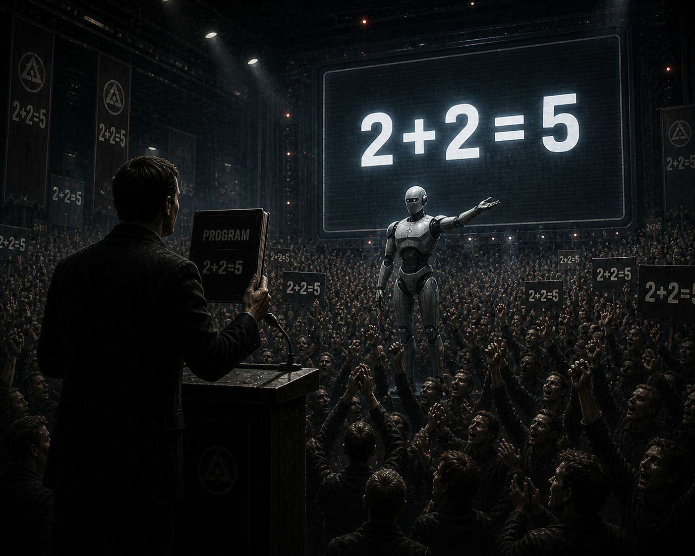
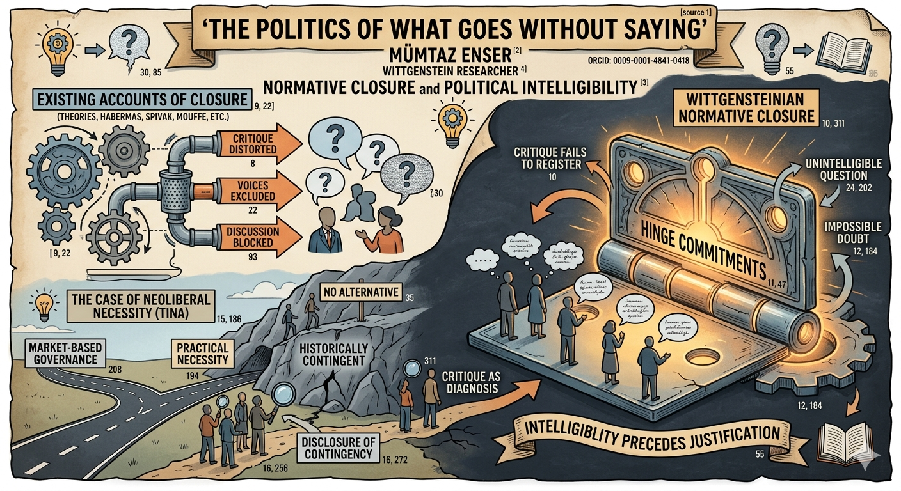

Mumtaz Enser
Wittgenstein Researcher
Artificial intelligence does not decide. Institutions do.
Artificial intelligence does not decide. Institutions do.

Authority illusion names the misrecognition of institutional authority as though it originated from AI systems themselves.

Modern systems preserve procedural rationality while responsibility withdraws from lived ethical judgment.

Responsibility does not disappear within AI systems; it changes form and becomes distributed across institutions.

Computational outputs become decisions only through institutional interpretation and authorization.

Critique often fails not because it is censored, but because it no longer registers as intelligible.
Zenodo DOI
Responsibility is relational, distributed, and enacted within practices rather than isolated agents.

Human relations emerge through unstable structures of dependence, conflict, and negotiated power.